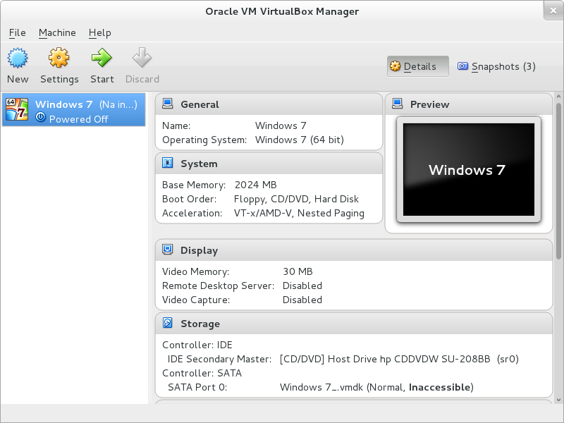
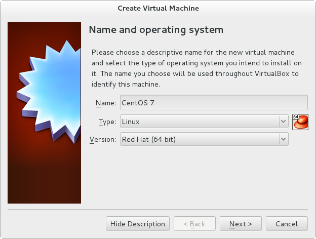
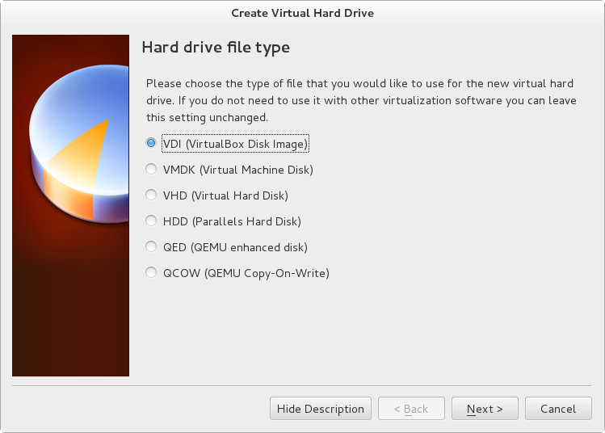
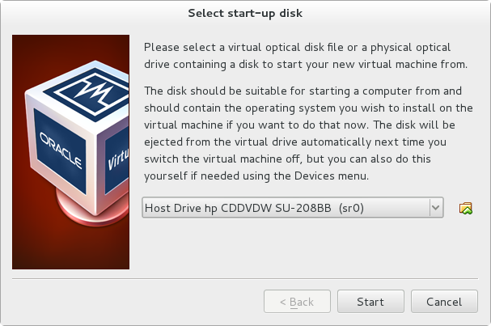
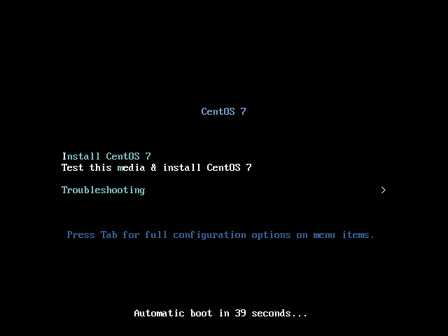
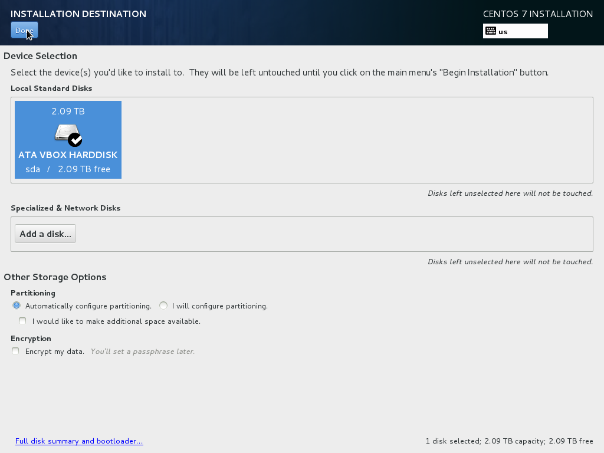
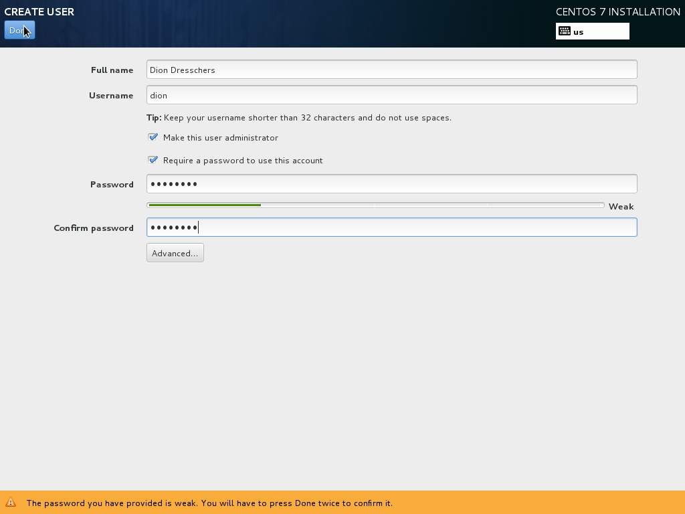
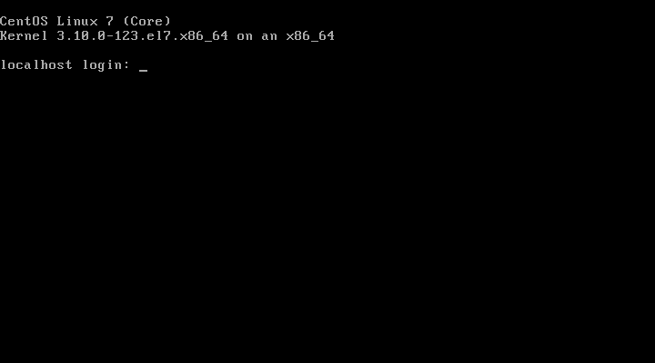

Virtual Box Installatie¶
Wil je deze cursus stap voor stap kunnen volgen kan je gebruik maken van hetzelfde besturingssysteem dat wij gebruiken, namelijk CentOS 7.
Heb je geen CentOS 7, maar wel een computer met:
- Windows
- Linux
- MacOS
dan kan je CentOS 7 draaien als virtuele machine in VirtualBox [2]
VirtualBox is een virtualizatie programma zoals VMware Player.
CentOS is een fork van Red Hat Enterprise Linux. We beginnen met CentOS 7 Core [3] , wat een vrij kale versie is zonder GUI.
Note
Hier vind je de handleiding van VirtualBox.
Je klikt als eerste op ‘New’ om een nieuwe VM te starten.
Note
We gaan altijd uitsluitend af op Engelstalige software.
Daarna type je CentOS 7 bij ‘Name’. Je ziet dat automatisch Red Hat geselecteerd wordt als besturingssysteem, wat prima is.
Klik dan op ‘Next’.
Je kan nu het geheugen selecteren voor de virtuele machine. De 512MB is prima en kan altijd achteraf nog makkelijk gewijzigd worden. Klik dus op ‘Next’.
Een VM heeft ook een harde schijf (wat eigenlijk een file is op het besturingssysteem waar je VirtualBox geinstalleerd hebt.).
De keuze ‘Create a virtual hard drive now’ is prima, druk dus op ‘Create’.
Je krijgt daarna de keuze wat voor type virtuele harde schijf je wilt maken. Dit maakt het verplaatsen van een VM van het ene virtualizatieprogramma (dus VirtualBox) naar het andere (bv. Microsoft Hyper-V) makkelijker.
De volgende vraag gaat over of de grootte van virtuele harde schijf bestand net zo groot moet zijn als de gekozen grootte van harde schijf. Standaard wordt niet-beschreven ruimte in de VM niet meegenomen in de grootte van het harde schijf bestand. Dit is een goede keuze, dus klik op ‘Next’
Hier kan je de grootte van de virtuele harde schijf kiezen. Als je de selectie van de vorige instelling op ‘Dynamically allocted’ hebt laten staan, dan kan je de grootte lekker groot maken (achteraf wijzigen is wat lastiger). Schuif de knop helemaal naar links voor de grootst mogelijke keuze.
Klik nu op ‘Create’ om de VM klaar te maken (deze heeft echter nog geen besturingssysteem).
Selecteer de nieuw gemaakte VM (deze heeft dus de naam ‘CentOS 7’).

Om de VM op te starten klik je ‘Start’
Je kunt meteen een opstart disk selecteren. Klik hiervoor op het icoontje rechts van de huidige selectie. Navigeer naar de ISO file die je net gedownload hebt en druk op ‘Open’. Druk nu ‘Start’ om de VM op te starten.
Nu wordt de ISO gestart en kan je de keuze maken om CentOS 7 te installeren door simpel de ‘Enter’-toets in te drukken.
Je komt nu in het graphische installatiescherm. Het besturingssysteem zelf zal standaard geen GUI bevatten.
Selecteer als taal ‘Engels (United States)’ en klik ‘Continue’.
Klik nu op ‘INSTALLATION DESTINATION’ en vervolgens twee keer de virtuele hard disk die je eerder hebt aangemaakt zodat je daar een vinkje ziet. Klik dan op ‘Done’ linksboven.
Nu kan je ‘Begin Installation’ drukken om de installatie te beginnen.
Je moet nu een paswoord maken voor het ‘root’ account. Het ‘root’ account heeft alle rechten op een systeem.
Klik op ‘ROOT PASSWOORD’ en vervolgens het paswoord (plus het wachtwoord om typo’s te voorkomen). Mocht het geen sterk wachtwoord zijn dat je twee keer op ‘done’ moet drukken om verder te gaan.
Je kan optioneel een tweede account aanmaken door op ‘USER CREATION’ te kiezen.
Selecteer ‘Make this user administrator’, zodat je ook met dit account ‘root’ rechten kan verkrijgen. Vervolgens weer ‘Done’ klikken.
Klik ‘Finish configuration’ om het installeren compleet te maken.
Dan klik je ‘Reboot’ om te herstarten.
Nadat de hele machine herstart is kan je inloggen met het ‘root’ account of je eigen gemaakte account.
Wil je van je VM terug naar je huidige machine, dan kan je de rechter CTRL-toets indrukken (dit is standaard ingesteld ald de zgn. Host-key). Dan kan je met de muis weer naar je huidige systeem terug.
Footnotes
| [2] | Virtualbox kan gedownload worden van http://virtualbox.org |
| [3] | CentOS 7 Core kan je onder andere hier downloaden |